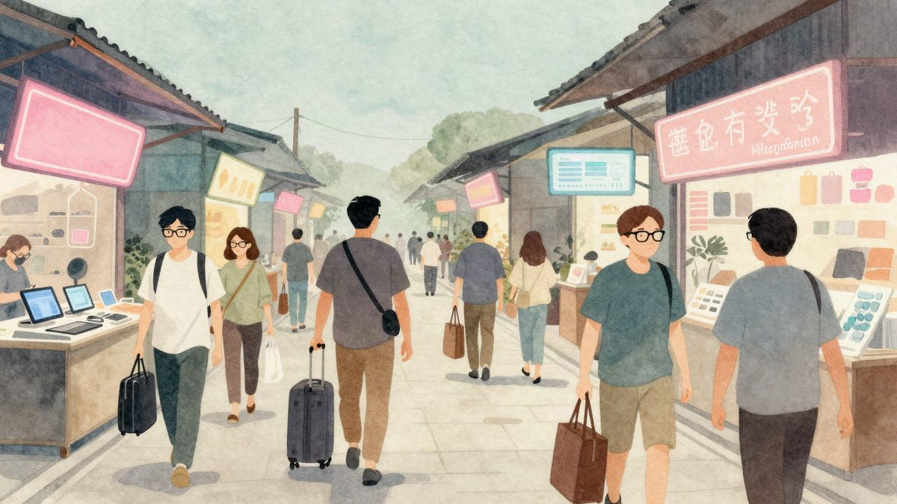

Qwen i Tmall Supermarket uvode automatsku narudžbu: AI svakih 7 do 60 dana naručuje pelene, mačju hranu i deterdžent

Qwen je zajedno s Tmall Supermarketom pokrenuo periodičnu kupovinu: korisnik zada proizvod, razmak i uvjete plaćanja, a Qwen sam naručuje. Usluga pokriva više od 16.000 proizvoda, a plaćanje ide preko Alipay AI Paya.
Qwen je zajedno s Tmall Supermarketom pokrenuo periodičnu kupnju. Korisnik zada proizvod, razmak naručivanja i uvjete plaćanja, a Qwen zatim sam redovito naručuje robu. Podržani su, među ostalim, mlijeko u prahu, papirnati ubrusi, mačja hrana i tekući deterdžent za rublje. Vijest je objavljena 20. studenoga.
U aplikaciji Qwen napišeš da želiš, na primjer, jednom mjesečno kupiti mlijeko u prahu ili deterdžent u Tmall Supermarketu. Zatim preko Alipay AI Paya odobriš autorizaciju i periodična se kupnja aktivira.
Proizvodi i razmaci
Usluga trenutačno podržava više od 16.000 proizvoda: od kućne čistoće, svakodnevne kupovine, kozmetike i osobne njege do mlijeka u prahu, dječje prehrane i potrepština za kućne ljubimce. Uglavnom su to proizvodi koji se kupuju često i čija je potrošnja prilično stalna.
Razmak naručivanja može biti 7, 14, 30 ili 60 dana. Papirnate ubruse, koji se brzo troše, moguće je postaviti na kraći razmak, a deterdžent na dulji. Ako kod kuće još ima zalihe, pojedinu narudžbu možeš preskočiti i nastaviti u sljedećem ciklusu.
Obavijesti i kontrola cijene
Qwen 30 minuta prije svake automatske narudžbe šalje obavijest da će se kupnja izvršiti. Ako je cijena proizvoda porasla, sustav čeka tvoju odluku pa tek onda nastavlja s kupnjom.
Plaćanje
Plaćanje preuzima Alipay AI Pay. Unaprijed određuješ iznos, broj naplata i rok valjanosti autorizacije, a Qwen smije platiti samo unutar tih uvjeta. Kad zadatak završi, autorizacija se automatski poništava. Jedna autorizacija odnosi se na jedan zadatak koji si postavio, uz ograničenja koliko se puta smije kupiti, koliko se najviše smije potrošiti i koliko dugo zadatak traje.
Alipay AI Pay je ranije uveo i funkciju AI low-price grab, u kojoj korisnik zadaje cilj kupnje, a AI čeka povoljnu cijenu prije narudžbe. Periodična kupnja umjesto cijene kao okidača koristi fiksno vrijeme.
Podržani su proizvodi iz kineskog Tmall Supermarketa.
Izvor: MyDrivers (快科技)
Povezani članci
 Japanska općina Shihoro umjesto školskog busa pokrenula je besplatni AI taxi Potetaku27. studenoga 2026.
Japanska općina Shihoro umjesto školskog busa pokrenula je besplatni AI taxi Potetaku27. studenoga 2026.- Google mijenja pravila privatnosti: podaci iz Gmaila i Fotografija mogli bi završiti u personaliziranim oglasima23. listopada 2026.

Shenzhenski Huaqiangbei tijekom APEC-a preplavili su strani turisti: prvo kupuju AI naočale20. studenoga 2026.